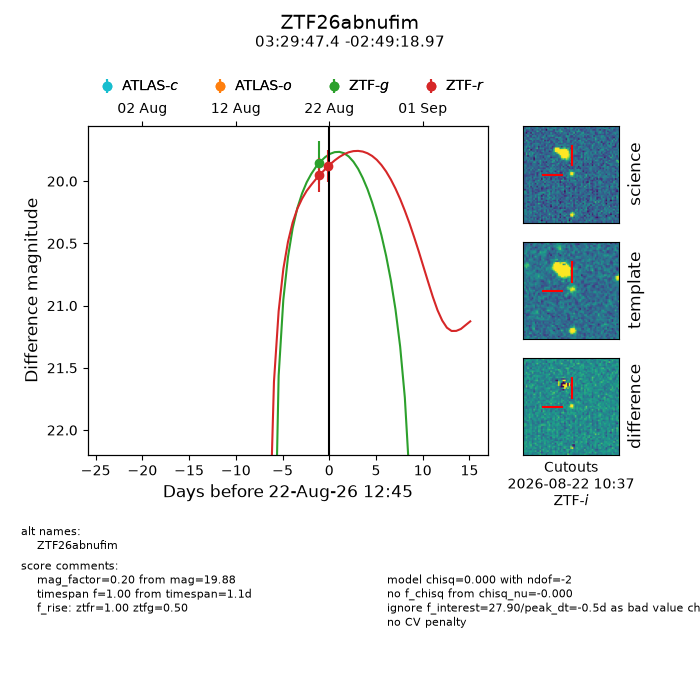
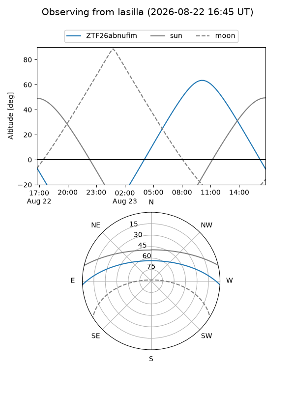
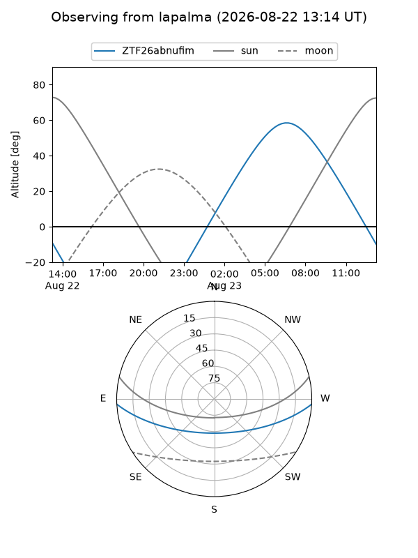
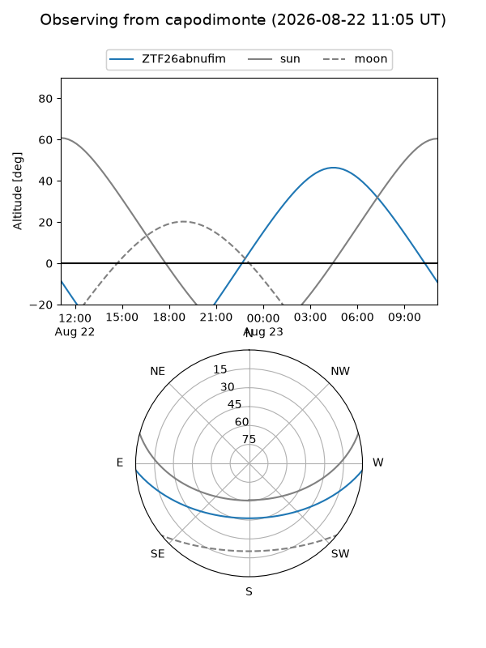
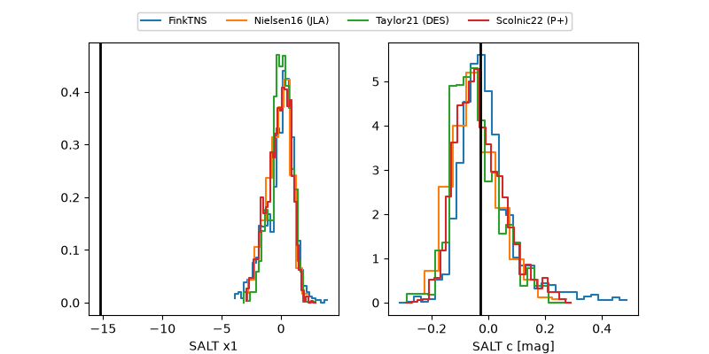

ZTF26abnufim
Target ZTF26abnufim at 2026-08-22 12:48
Aliases and brokers:
FINK-ZTF: ztf.fink-portal.org/ZTF26abnufim
Lasair-ZTF: lasair-ztf.lsst.ac.uk/objects/ZTF26abnufim
ALeRCE-ZTF: alerce.online/object/ZTF26abnufim
Direct TNS query: direct search
alt names
ZTF26abnufim (ztf,fink_ztf)
Coordinates:
equatorial (ra, dec) = 52.4474,-2.82194
equatorial (HMS+DMS) = 03:29:47.38,-02:49:18.97
galactic (l, b) = (187.1706,-45.03062)
Flags:
peak dt: -0.5
Photometry:
last ztfg=19.85, ztfr=19.88
1 ztfg, 2 ztfr detections
Lightcurve

Visibility



Additional plots
